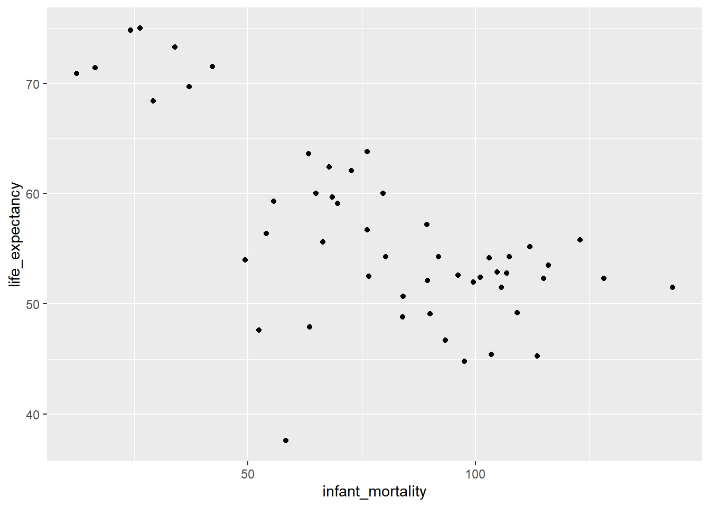
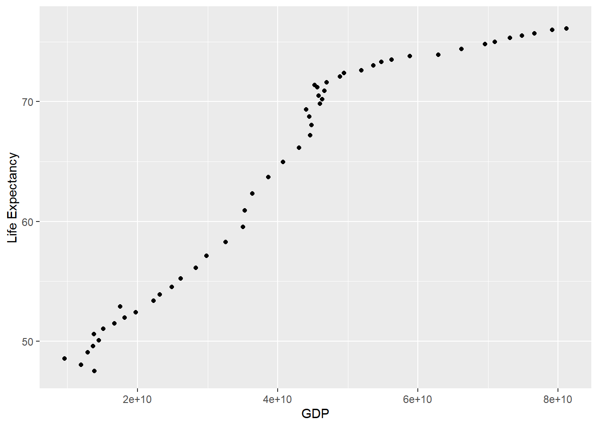

R coding Exercise
## ── Attaching packages ─────────────────────────────────────── tidyverse 1.3.1 ──## ✓ ggplot2 3.3.5 ✓ purrr 0.3.4
## ✓ tibble 3.1.4 ✓ dplyr 1.0.7
## ✓ tidyr 1.1.3 ✓ stringr 1.4.0
## ✓ readr 2.0.1 ✓ forcats 0.5.1## ── Conflicts ────────────────────────────────────────── tidyverse_conflicts() ──
## x dplyr::filter() masks stats::filter()
## x dplyr::lag() masks stats::lag()# Create object named africa data. Filter gapminder to create new dataset with only African countries.
africadata <- gapminder %>% filter(continent == "Africa")
# view data summary for africadata
summary(africadata)## country year infant_mortality life_expectancy
## Algeria : 57 Min. :1960 Min. : 11.40 Min. :13.20
## Angola : 57 1st Qu.:1974 1st Qu.: 62.20 1st Qu.:48.23
## Benin : 57 Median :1988 Median : 93.40 Median :53.98
## Botswana : 57 Mean :1988 Mean : 95.12 Mean :54.38
## Burkina Faso: 57 3rd Qu.:2002 3rd Qu.:124.70 3rd Qu.:60.10
## Burundi : 57 Max. :2016 Max. :237.40 Max. :77.60
## (Other) :2565 NA's :226
## fertility population gdp continent
## Min. :1.500 Min. : 41538 Min. :4.659e+07 Africa :2907
## 1st Qu.:5.160 1st Qu.: 1605232 1st Qu.:8.373e+08 Americas: 0
## Median :6.160 Median : 5570982 Median :2.448e+09 Asia : 0
## Mean :5.851 Mean : 12235961 Mean :9.346e+09 Europe : 0
## 3rd Qu.:6.860 3rd Qu.: 13888152 3rd Qu.:6.552e+09 Oceania : 0
## Max. :8.450 Max. :182201962 Max. :1.935e+11
## NA's :51 NA's :51 NA's :637
## region
## Eastern Africa :912
## Western Africa :912
## Middle Africa :456
## Northern Africa :342
## Southern Africa :285
## Australia and New Zealand: 0
## (Other) : 0#view structure for africadata
str(africadata)## 'data.frame': 2907 obs. of 9 variables:
## $ country : Factor w/ 185 levels "Albania","Algeria",..: 2 3 18 22 26 27 29 31 32 33 ...
## $ year : int 1960 1960 1960 1960 1960 1960 1960 1960 1960 1960 ...
## $ infant_mortality: num 148 208 187 116 161 ...
## $ life_expectancy : num 47.5 36 38.3 50.3 35.2 ...
## $ fertility : num 7.65 7.32 6.28 6.62 6.29 6.95 5.65 6.89 5.84 6.25 ...
## $ population : num 11124892 5270844 2431620 524029 4829291 ...
## $ gdp : num 1.38e+10 NA 6.22e+08 1.24e+08 5.97e+08 ...
## $ continent : Factor w/ 5 levels "Africa","Americas",..: 1 1 1 1 1 1 1 1 1 1 ...
## $ region : Factor w/ 22 levels "Australia and New Zealand",..: 11 10 20 17 20 5 10 20 10 10 ...# for observations in africadata, create object with infant_mortality and life_expectancy, only
imle <- data.frame(africadata$infant_mortality, africadata$life_expectancy)
imle <- imle %>% rename(infant_mortality = africadata.infant_mortality,
life_expectancy = africadata.life_expectancy)
#view summary
summary(imle)## infant_mortality life_expectancy
## Min. : 11.40 Min. :13.20
## 1st Qu.: 62.20 1st Qu.:48.23
## Median : 93.40 Median :53.98
## Mean : 95.12 Mean :54.38
## 3rd Qu.:124.70 3rd Qu.:60.10
## Max. :237.40 Max. :77.60
## NA's :226#view structure
str(imle)## 'data.frame': 2907 obs. of 2 variables:
## $ infant_mortality: num 148 208 187 116 161 ...
## $ life_expectancy : num 47.5 36 38.3 50.3 35.2 ...# for observations in africadata, create object with population and life_expectancy, only
ple <- data.frame(africadata$population, africadata$life_expectancy)
ple <- ple %>% rename(population = africadata.population,
life_expectancy = africadata.life_expectancy)
#view summary
summary(ple)## population life_expectancy
## Min. : 41538 Min. :13.20
## 1st Qu.: 1605232 1st Qu.:48.23
## Median : 5570982 Median :53.98
## Mean : 12235961 Mean :54.38
## 3rd Qu.: 13888152 3rd Qu.:60.10
## Max. :182201962 Max. :77.60
## NA's :51#view structure
str(ple)## 'data.frame': 2907 obs. of 2 variables:
## $ population : num 11124892 5270844 2431620 524029 4829291 ...
## $ life_expectancy: num 47.5 36 38.3 50.3 35.2 ...# plot life expectancy as a function of infant mortality and as a function of population size
imle_plot <- imle %>%
ggplot(aes(x=infant_mortality, y=life_expectancy))+
geom_point()
imle_plot ## Warning: Removed 226 rows containing missing values (geom_point).ple_plot <- ple %>%
ggplot(aes(x=log10(population), y=life_expectancy))+
geom_point()
ple_plot## Warning: Removed 51 rows containing missing values (geom_point).# ple_plot graph seems to show that as population growth has a positive correlation with life expectancy. Each individual streak represents a different country
# Which years have the highest number of NAs for infant mortality?
na_imle <- africadata %>%
select(year,infant_mortality) %>%
filter(is.na(infant_mortality)) %>%
count(year) %>%
arrange(-n)
rmarkdown::paged_table(na_imle) # Create a new object by extracting only the data for the year 2000 from the africadata object
africadata2k <- africadata %>% filter(year == 2000)
# View Summary
summary(africadata2k)## country year infant_mortality life_expectancy
## Algeria : 1 Min. :2000 Min. : 12.30 Min. :37.60
## Angola : 1 1st Qu.:2000 1st Qu.: 60.80 1st Qu.:51.75
## Benin : 1 Median :2000 Median : 80.30 Median :54.30
## Botswana : 1 Mean :2000 Mean : 78.93 Mean :56.36
## Burkina Faso: 1 3rd Qu.:2000 3rd Qu.:103.30 3rd Qu.:60.00
## Burundi : 1 Max. :2000 Max. :143.30 Max. :75.00
## (Other) :45
## fertility population gdp continent
## Min. :1.990 Min. : 81154 Min. :2.019e+08 Africa :51
## 1st Qu.:4.150 1st Qu.: 2304687 1st Qu.:1.274e+09 Americas: 0
## Median :5.550 Median : 8799165 Median :3.238e+09 Asia : 0
## Mean :5.156 Mean : 15659800 Mean :1.155e+10 Europe : 0
## 3rd Qu.:5.960 3rd Qu.: 17391242 3rd Qu.:8.654e+09 Oceania : 0
## Max. :7.730 Max. :122876723 Max. :1.329e+11
##
## region
## Eastern Africa :16
## Western Africa :16
## Middle Africa : 8
## Northern Africa : 6
## Southern Africa : 5
## Australia and New Zealand: 0
## (Other) : 0# View Structure
str(africadata2k)## 'data.frame': 51 obs. of 9 variables:
## $ country : Factor w/ 185 levels "Albania","Algeria",..: 2 3 18 22 26 27 29 31 32 33 ...
## $ year : int 2000 2000 2000 2000 2000 2000 2000 2000 2000 2000 ...
## $ infant_mortality: num 33.9 128.3 89.3 52.4 96.2 ...
## $ life_expectancy : num 73.3 52.3 57.2 47.6 52.6 46.7 54.3 68.4 45.3 51.5 ...
## $ fertility : num 2.51 6.84 5.98 3.41 6.59 7.06 5.62 3.7 5.45 7.35 ...
## $ population : num 31183658 15058638 6949366 1736579 11607944 ...
## $ gdp : num 5.48e+10 9.13e+09 2.25e+09 5.63e+09 2.61e+09 ...
## $ continent : Factor w/ 5 levels "Africa","Americas",..: 1 1 1 1 1 1 1 1 1 1 ...
## $ region : Factor w/ 22 levels "Australia and New Zealand",..: 11 10 20 17 20 5 10 20 10 10 ...# Plot africadata for year 2000, x is infant mortality, y is life expectancy
imle_plot2k <- africadata2k %>%
select(year,infant_mortality,life_expectancy) %>%
ggplot(aes(x=infant_mortality, y=life_expectancy))+
geom_point()
imle_plot2k 
# Plot africa data for year 2000, x is population, y is life expectancy
ple_plot2k <- africadata2k %>%
select(year,population,life_expectancy) %>%
ggplot(aes(x=log10(population),y=life_expectancy))+
geom_point()
ple_plot2k# Line of best fit with infant mortality
fit1 <- africadata2k %>%
select(year,infant_mortality,life_expectancy) %>%
ggplot(aes(x=infant_mortality, y=life_expectancy))+
geom_point()+
geom_smooth(method="lm")
# Run plot
fit1 ## `geom_smooth()` using formula 'y ~ x'
# Line of best fit with population
fit2 <- africadata2k %>%
select(year,population,life_expectancy) %>%
ggplot(aes(x=log10(population),y=life_expectancy))+
geom_point()+
geom_smooth(method="lm")
fit2## `geom_smooth()` using formula 'y ~ x'
#additional works done by Ehsan Suez
#Getting data for the country “Algeria” only
Algeriadata <- filter(gapminder, country=="Algeria")
AlgPop <- select(Algeriadata, population, life_expectancy)
AlgGDP <- select(Algeriadata, gdp, life_expectancy)
summary(AlgPop)## population life_expectancy
## Min. :11124892 Min. :47.50
## 1st Qu.:16136442 1st Qu.:54.52
## Median :24254691 Median :69.33
## Mean :24231378 Mean :65.04
## 3rd Qu.:31690337 3rd Qu.:73.80
## Max. :39666519 Max. :76.50
## NA's :1summary(AlgGDP)## gdp life_expectancy
## Min. :9.595e+09 Min. :47.50
## 1st Qu.:2.294e+10 1st Qu.:54.52
## Median :4.428e+10 Median :69.33
## Mean :4.082e+10 Mean :65.04
## 3rd Qu.:5.236e+10 3rd Qu.:73.80
## Max. :8.114e+10 Max. :76.50
## NA's :5#plot life expectancy against either population or GDP
ggplot(AlgPop, aes(x = population, y = life_expectancy)) +
geom_point() +
xlab("Population") +
ylab("Life Expectancy")## Warning: Removed 1 rows containing missing values (geom_point).ggplot(AlgGDP, aes(x = gdp, y = life_expectancy)) +
geom_point() +
xlab("GDP") +
ylab("Life Expectancy")## Warning: Removed 5 rows containing missing values (geom_point). #Linear model of “life expectancy” as outcome and GDP or Population as predictor
library("tidyverse")
fit3 <- lm(population ~ life_expectancy, AlgPop)
summary(fit3)##
## Call:
## lm(formula = population ~ life_expectancy, data = AlgPop)
##
## Residuals:
## Min 1Q Median 3Q Max
## -3697414 -1458151 503566 935990 5662467
##
## Coefficients:
## Estimate Std. Error t value Pr(>|t|)
## (Intercept) -30564566 1912725 -15.98 <2e-16 ***
## life_expectancy 845139 29161 28.98 <2e-16 ***
## ---
## Signif. codes: 0 '***' 0.001 '**' 0.01 '*' 0.05 '.' 0.1 ' ' 1
##
## Residual standard error: 2167000 on 54 degrees of freedom
## (1 observation deleted due to missingness)
## Multiple R-squared: 0.9396, Adjusted R-squared: 0.9385
## F-statistic: 840 on 1 and 54 DF, p-value: < 2.2e-16fit4 <- lm(gdp ~ life_expectancy, AlgGDP)
summary(fit4)##
## Call:
## lm(formula = gdp ~ life_expectancy, data = AlgGDP)
##
## Residuals:
## Min 1Q Median 3Q Max
## -1.004e+10 -4.338e+09 -2.652e+08 2.484e+09 1.672e+10
##
## Coefficients:
## Estimate Std. Error t value Pr(>|t|)
## (Intercept) -8.344e+10 5.737e+09 -14.54 <2e-16 ***
## life_expectancy 1.943e+09 8.868e+07 21.91 <2e-16 ***
## ---
## Signif. codes: 0 '***' 0.001 '**' 0.01 '*' 0.05 '.' 0.1 ' ' 1
##
## Residual standard error: 6.244e+09 on 50 degrees of freedom
## (5 observations deleted due to missingness)
## Multiple R-squared: 0.9057, Adjusted R-squared: 0.9038
## F-statistic: 480.1 on 1 and 50 DF, p-value: < 2.2e-16